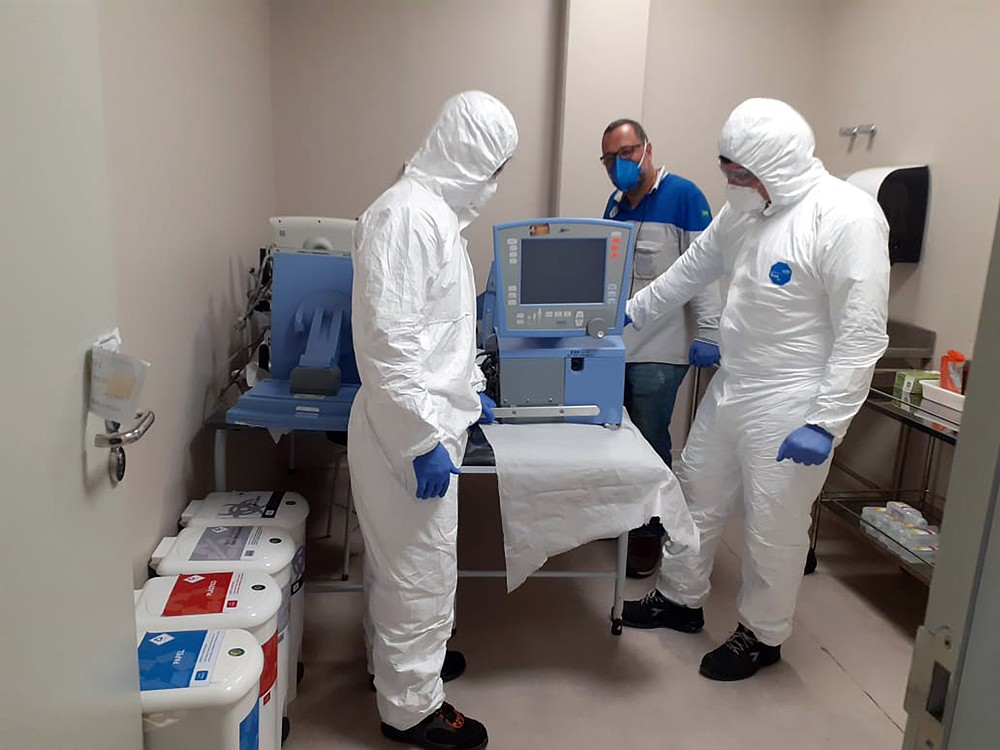
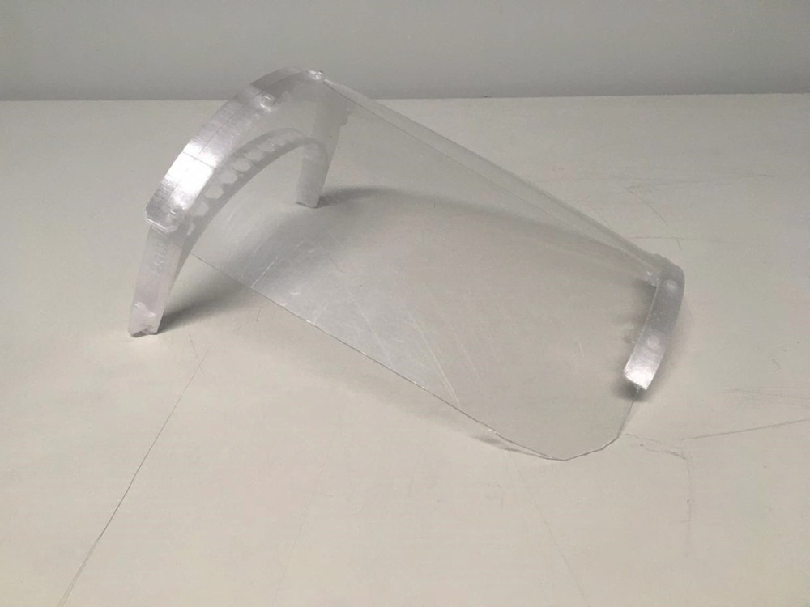

Marcas de carro vão criar hospitais de campanha, consertar respiradores e fazer protetores faciais;
veja ações:
Pelo menos 6 empresas já anunciaram ações no combate ao coronavírus.
Por André Paixão, G1
01/04/2020 07h00
Ao menos 6 fabricantes de veículos já anunciaram ações de ajuda no combate ao coronavírus.
Com todas as fábricas de automóveis paradas no país, as marcas agora estão concentrando seus esforços em iniciativas como a produção de protetores faciais e o reparo de respiradores quebrados.
FCA vai criar hospitais, enquanto Toyota doa ambulâncias
PSA vai fazer protetores, e GM pretende arrumar respiradores
O G1 listou as iniciativas já divulgadas pelas fabricantes. Veja abaixo:
FCA - Fiat Chrysler
Fiat Chrysler vai consertar respiradores quebrados para ajudar no combate ao coronavírus — Foto: Divulgação
A FCA, dona das marcas Fiat e Jeep anunciou apoio na criação de dois hospitais de campanha, além da participação no conserto de respiradores, a produção de protetores faciais e a doação de máscaras e álcool gel.
A empresa vai ceder o terreno do Fiat Clube, em Betim (MG), cidade onde a FCA tem sua mais antiga fábrica no Brasil, para a construção de um hospital de campanha. Lá serão instalados 200 leitos.
Em Goiana (PE), onde a Jeep tem sua fábrica, a FCA irá construir um outro hospital de campanha, com capacidade para 100 pacientes.
A FCA também se comprometeu a usar impressoras 3D para produzir 2 mil protetores faciais, usados por profissionais da saúde, além de doar 60 mil máscaras para as autoridades da área.
Por fim, profissionais da empresa vão auxiliar na força-tarefa de consertar respiradores que estão fora de uso nos estados de Minas Gerais, Pernambuco e Paraíba. A equipe de 18 pessoas ficará responsável pela manutenção de mais de 600 aparelhos.
General Motors
A GM, que é dona da marca líder no Brasil, a Chevrolet, foi a primeira a anunciar a participação no projeto de manutenção de respiradores quebrados. A empresa prometeu reparar todos os aparelhos do tipo.
Para isso, as fábricas no país, além do campo de provas de Indaiatuba (SP), estão sendo adaptados, enquanto os funcionários recebem treinamento.
Segundo a empresa, a expectativa é que o Brasil tenha 5 mil respiradores fora de uso. No momento, a GM aguarda o fim do levantamento, para saber exatamente quantas equipes precisará mobilizar.
"Terminando o mapeamento, teremos uma visão melhor. O objetivo é ter pelo menos uma equipe em cada localidade. Mas, talvez tenhamos que recorrer a mais voluntários. Temos recebido várias ligações de funcionários dispostos a ajudar", disse ao G1 Carlos Sakuramoto, gerente de inovação da GM.
Hyundai
A principal ação da Hyundai é um tanto diferente daquela adotada pelas outras marcas. A fabricante espera colocar mil carros à disposição de idosos e profissionais da saúde. O transporte gratuito será feito com veículos de test-drive.
Por enquanto, apenas uma concessionária, de Florianópolis, colocou sua frota de 10 carros à disposição do público.
O pedido do veículo pode ser feito por telefone, de segunda a sexta, das 8h às 18h. Se houver disponibilidade, a central informará a placa do carro e o nome do motorista. A Hyundai oferece diferentes trajetos, como transporte ponto- a- ponto, consulta médica, retirada de compras e medicamentos, e transporte para vacinação drive-thru.
Além disso, a fábrica da empresa em Piracicaba (SP) irá produzir cerca de 100 protetores faciais, usando impressoras 3D.
PSA – Peugeot Citroën
Protótipo de protetor facial produzido pela PSA em Porto Real, RJ — Foto: Divulgação
A PSA, que tem as marcas Peugeot e Citroën, foi a primeira empresa a anunciar, no último dia 25 de março, que iria produzir protetores faciais e doar para autoridades de saúde da região de Porto Real (RJ), onde possui fábrica.
A ideia veio do gerente da unidade, Carlos Costa, ao assistir uma reportagem do Jornal Nacional que mostrou um projeto de uma universidade do Rio de Janeiro que usa impressoras 3D para produzir os protetores.
"Depois de ver a reportagem, pesquisei no celular e encontrei o projeto. Consegui baixar o desenho, e, no dia seguinte, passei para um colaborador que cuida da impressora da fábrica. Conseguimos imprimir um protetor de teste", conta.
Com o sinal verde da diretoria, e uma parceria com a Fablab, uma escola-laboratório, a produção já teve início.
Toyota
A Toyota é a terceira fabricante confirmada, até agora, na força-tarefa de reparar os ventiladores pulmonares fora de operação.
Mas ainda não há detalhes de como será a participação da fabricante de origem japonesa.
A Toyota ainda afirmou que irá doar 4 unidades da Hilux, convertidas para ambulância, além de 30 mil frascos de álcool em gel para o governo do Estado de São Paulo.
Volkswagen
A Volkswagen ainda não anunciou nenhuma ação no sentido de transformar suas instalações em hospitais, ou produzir bens que ajudem ao combate à doença.
A fabricante, porém, anunciou que vai doar 2 mil máscaras do tipo PFF-2 para as prefeituras de São Bernardo do Campo, Taubaté, São Carlos (SP) e São José dos Pinhais (PR), cidades onde a Volks tem fábricas.
Os itens eram “parte do estoque da companhia e eram de utilização na linha de produção”.
A Volks também vai emprestar 100 veículos para as cidades, e também para o governo do estado de São Paulo. O objetivo é que os automóveis sejam usados para “deslocamento de médicos e enfermeiras, bem como transporte de medicamentos e equipamentos de saúde”, disse a empresa, em nota.